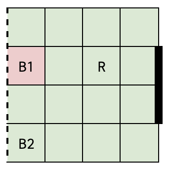
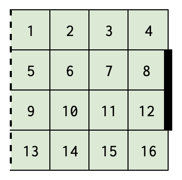
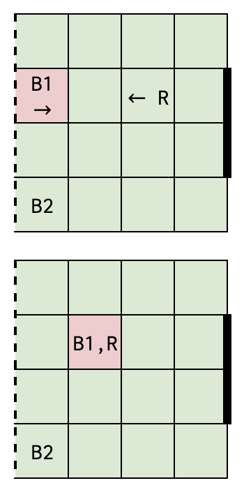
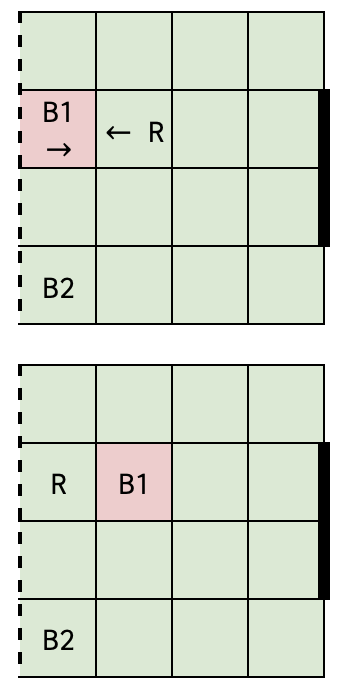
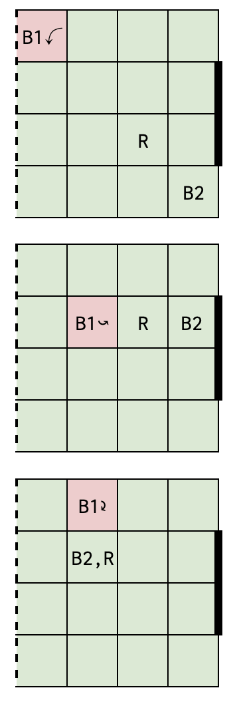
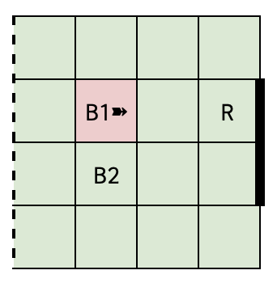
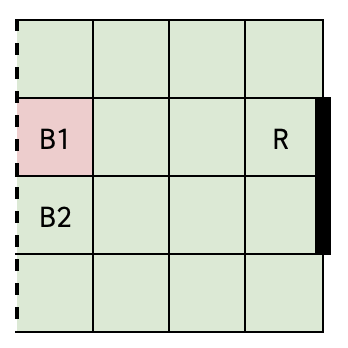

Problem Description:
You are the manager of a
2-member football team. You want to prepare a strategy that
maximises the chances of scoring goals by doing MDP Planning!
You are tasked with the problem of Half Field Offense - scoring
a goal with two attackers against one defender. The football
half pitch is a 4x4 grid with a goal that is 2 units long. You
have two players - B1 and B2, with possession of the ball, whose
skill levels for different actions are parameterised by p and q
in [0, 0.5] and [0.6, 1]. Note that p and q correspond to
different actions by these players, and are identical for both
players. The opponent has a defender R. You must formulate this
as an MDP and score a goal before you lose possession! The game
ends when the players score a goal, or lose possession,
whichever occurs first. p and q are expected as inputs from the command line. (Use argparse python pakcgae for this)

Fig 1: (The playground)
Game positions:
The squares of the grid are numbered from 1 to 16 row-wise. Then the
game position can be specified in the following format --
[B1_square, B2_square, R_square, ball_possession].
Here B1 and B2 are players you control and R is a player from the
opponent team. Ball possession is an integer from 1,2 indicating which
player has the possession.
Thus B1_square, B2_square, and R_square are 2-digit numbers, with a
leading 0 for square numbers below 10.
Note: In the problem statement, you will require x and y coordinates in
some cases, but you can use any origin/axis since only the relative
differences of coordinates matter.

Fig 2: (The positions)
Actions:
Attempt to move one player L, R, U, or D by 1 unit. [0,1,2,3 correspond to L, R, U, D for B1 and 4,5,6,7 correspond to L, R, U, D for B2]
Attempt a pass to your teammate. [8]
Attempt a shot on the goal. [9]
Size of action space = 10.
You are provided with 3 opponent policy files in the data directory that the players can face in the game, giving the probability of the opponent action for each state.
Opponent Policies:
Note that your planner will only compute a policy for the agent (that is, the team of B1 and B2). In order to do so, you will be given R's policy, but you will not compute or change R's policy.
Movement: For moving with the ball (i.e. if movement with the player in possession of the ball), the probability of success in the desired direction is 1-2p and 2p probability of losing possession directly. For moving without the ball there is a 1-p probability of moving in the desired direction and p probability of the game ending (without a goal) directly. If a player chooses to move in a particular direction, there is zero probability of moving in any other direction. The only stochasticity in movement is regarding losing possession directly according to the probabilities described above. If possession is lost, the episode ends. Additionally, If a player goes out of bounds the episode ends.
Tackling: There are two cases in which a tackling situation arises -
A. If a player with possession of the ball and the opponent transition
to a position where they share the same square. The figures below show
an example game position and the actions chosen by the player to reach
this situation. In both of these cases, the probability of the tackle being successful given the move was successful is 0.5. The final probability values are shown in the figure.
Also, note that a tackling situation only arises when the player with the ball attempts to move.

Fig 3, 4: Tackling case A
State: Fig 3
Action: B1 attempts to move right
Opponent Action: Move left from square 7 to 6 according to policy
Outcomes: P(Fig 4 | R moves to square 6) = 0.5 - p, P(episode ends | R moves to square 6) = 0.5 + p
Note: Straight arrows represent player movement. Red squares represent the ball location.
B. If a player with possession of the ball and the opponent are on adjacent squares and they successfully move towards each other, thus swapping squares. The figures below show an example game position and the actions chosen by the player to reach this situation.

Fig 5, 6: Tackling case B
State: Fig 5
Action: B1 attempts to move right
Opponent Action: Move left from square 6 to 5 according to policy
Outcomes: P(Fig 6 | R moves to square 6) = 0.5 - p, P(episode ends | R moves to square 6) = 0.5 + p
Passing: The probability is a function of the distance from the teammate for passing the ball. If player B1 is on (x1, y1) and B2 is on (x2, y2) then the probability of a successful pass is q - 0.1*max(|x1-x2|, |y1-y2|). This probability is halved if R moves to a square in between B1 and B2, including the squares of B1 and B2. A square is said to be in between two squares if its centre lies on the line joining the centres of the two squares. If a pass fails, then the game ends. While transitioning from one timestep to the next, assume that R moves first and then a pass is attempted by the passer. Thus the above condition must be checked for the new location of R. Example configurations where R is considered to be in between are given below.

Fig 7, 8, 9: Passing with the opponent in between (Note: Curved arrows represent an attempted pass.)
State: Fig 7
Action: B1 attempts a pass to B2
Opponent Action: Move from some square to square 11 according to policy
Outcomes: P(successful pass | R moves to square 11) = 0.5q - 0.15, P(episode ends | R moves to square 11) = 1.15 - 0.5q
State: Fig 8
Action: B1 attempts a pass to B2
Opponent Action: Move from some square to square 7 according to policy
Outcomes: P(successful pass | R moves to square 7) = 0.5q - 0.1, P(episode ends | R moves to square 7) = 1.1 - 0.5q
State: Fig 9
Action: B1 attempts a pass to B2
Opponent Action: Move from some square to square 6 according to policy
Outcomes: P(successful pass | R moves to square 6) = 0.5q - 0.05, P(episode ends | R moves to square 6) = 1.05 - 0.5q
Shooting: For shooting towards the goal, the probability is a function of the distance of the x coordinate of the shooter. If B1 has the ball and is on (x1, y1) the probability of a goal is q - 0.2*(3-x1). This probability is halved if there is an opponent player in the two squares in front of the goal. If a shot fails, then the game ends. While transitioning from one timestep to the next, assume that R moves first and then a shot is attempted by the shooter. Thus the above condition must be checked for the new location of R.

Fig 10: Shooting with the opponent at the goal (Note: Wedged arrows represent an attempted shot.)
State: Fig 10
Action: B1 attempts a shot on goal
Opponent Action: Move from some square to square 8 according to policy
Outcomes: P(goal | R moves to square 8) = 0.5q - 0.2, P(episode ends | R moves to square 8) = 1.2 - 0.5q
Inputs to be provided to students: A list of game positions in the above coordinate system. 3 opponent policy documents with the action probabilities of each action by the opponent from each state in the above format.
Output required from students:
Expected number of goals scored against each of the three opponent policies.
Two graphs indicating the probability of winning starting from position
[05, 09, 08, 1] (shown below) against policy-1 (greedy defense)
[Graph 1]: For p in {0, 0.1, 0.2, 0.3, 0.4, 0.5} and q = 0.7
[Graph 2]: For q in {0.6, 0.7, 0.8, 0.9, 1} and p = 0.3

Fig 11: Starting state
Encode your opponent's policy as an environment. On the command line, there should be a way for the user to specify the kind of policy the opponent will use (use argparse package for this)
Obtain an ideal value through any method of your choice. Value Iteration on States is recommended. In that TD(0) or TD(lambda) with suitable small lambda values are recommended.
Attach the two graphs showing the variation in probability of winning with player parameters in the report along with observations. Do the trends match with your intuition?